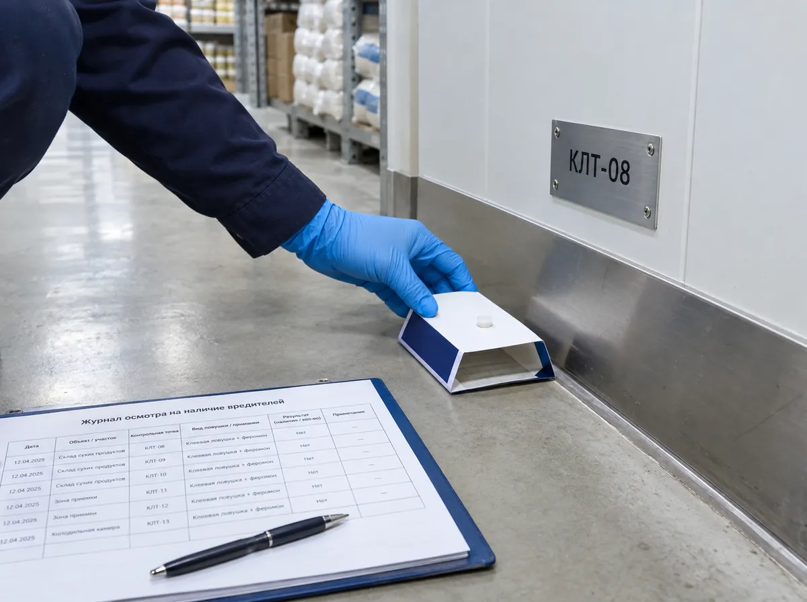
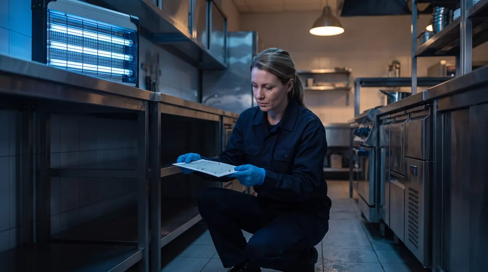
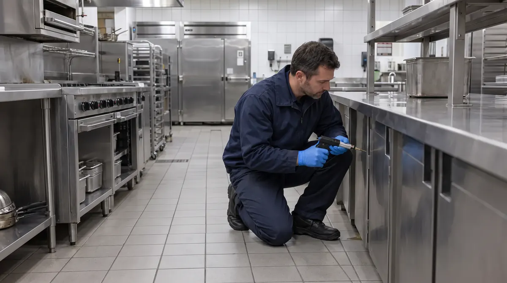
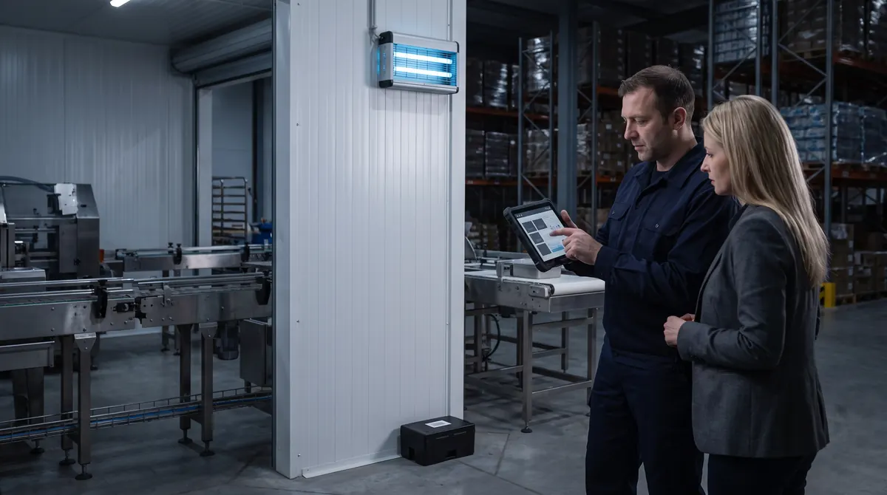
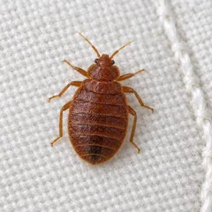
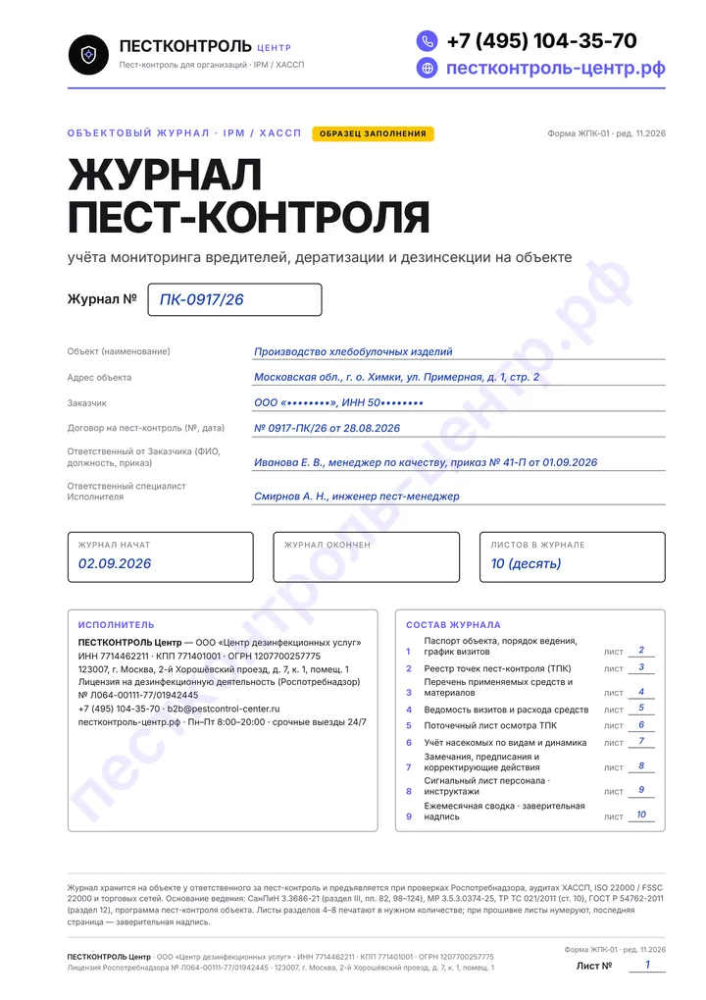
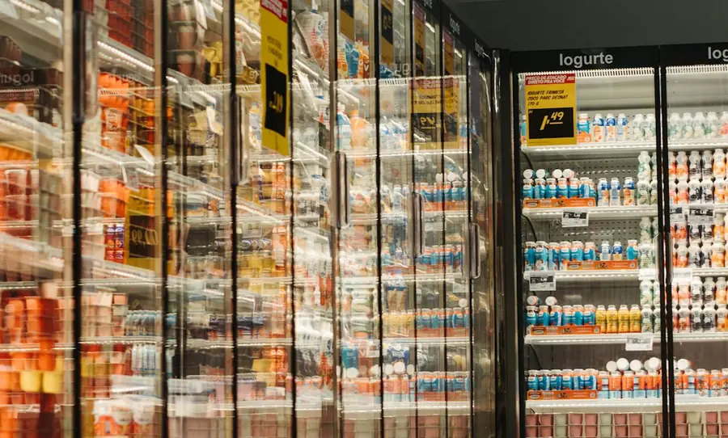
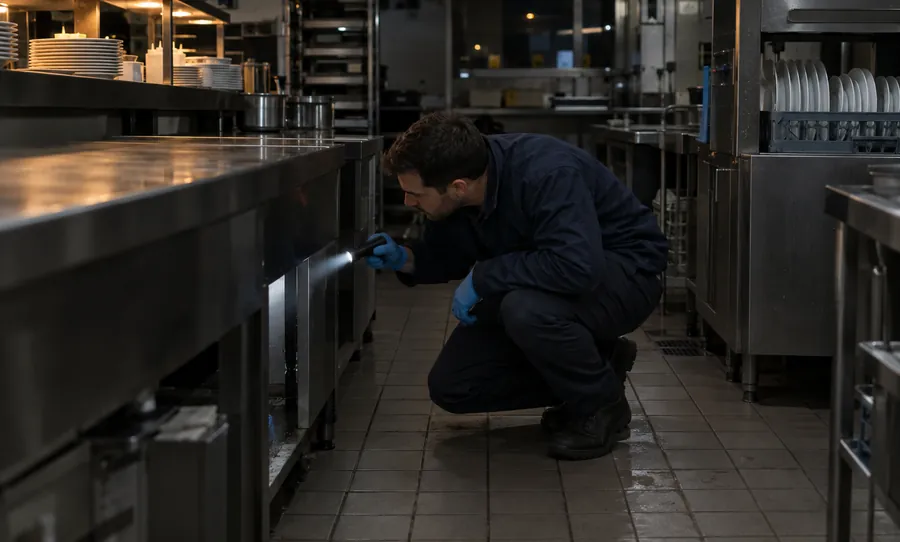
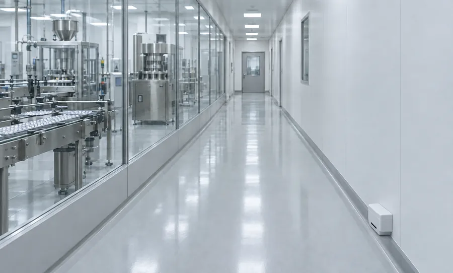
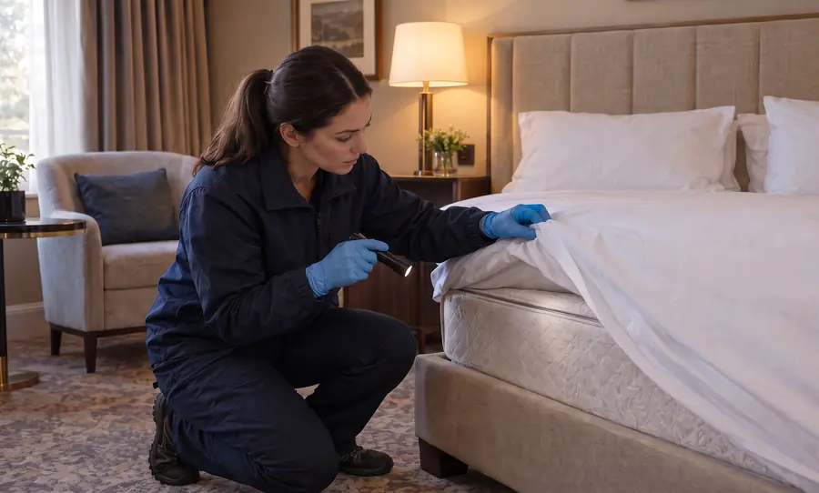

Дезинсекция
Контроль и истребление ползающих и летающих насекомых и членистоногих: тараканов, мух, дрозофил, огнёвок, муравьёв, клопов и чешуйниц. Клеевые и феромонные мониторы, УФ-лампы, гели и микрокапсулированные суспензии.
Профилактическая и истребительная дезинсекция в Москве и области по СанПиН 3.3686-21. Бесплатный осмотр и расчёт до договора.
0 из 5 на месте
Отметьте, что уже есть на вашем объекте. Каждый пустой пункт — несоответствие для инспектора Роспотребнадзора или аудитора торговой сети, а насекомые без системы возвращаются через 2–3 недели.
Заказать бесплатное обследованиеДезинсекция — это комплекс организационных, санитарно-технических, санитарно-гигиенических и истребительных мероприятий, направленных на уничтожение членистоногих, имеющих эпидемиологическое и санитарно-гигиеническое значение (п. 98 СанПиН 3.3686-21). На предприятии это защита производственных, складских, торговых и офисных помещений и прилегающей территории от тараканов, мух, дрозофил, пищевой моли, муравьёв, клопов, чешуйниц и блох.

Контроль и истребление ползающих и летающих насекомых и членистоногих: тараканов, мух, дрозофил, огнёвок, муравьёв, клопов и чешуйниц. Клеевые и феромонные мониторы, УФ-лампы, гели и микрокапсулированные суспензии.
Защита территории и зданий от серых и чёрных крыс, домовых мышей и полёвок: три контура закрытых приманочных станций (КИК) по внешнему периметру и механические живоловки без яда внутри цехов и складов.
Уничтожение патогенных микроорганизмов — бактерий, вирусов и плесневых грибов — на технологических линиях, поверхностях пищеблоков, в системах вентиляции, холодильных камерах и автотранспорте.
Выберите сценарий под задачу вашего предприятия — от экстренной ликвидации насекомых за 1–2 выезда до круглогодичного ведения объекта и журнала пест-контроля по СанПиН и ХАССП.

Для пищевых производств, ресторанов, продуктового ритейла, складов, гостиниц и БЦ, которым нужен предсказуемый результат и готовая документация к любой проверке.

Когда в цехе, на кухне, складе, в магазине или офисе замечены живые насекомые и требуется быстро остановить их размножение без срыва утренней смены.

Для предприятий перед плановой проверкой Роспотребнадзора, аудитом торговой сети или при смене подрядчика, который оставил формальные акты без схемы точек.
После разовой истребительной обработки объект можно сразу перевести на годовое обслуживание по договору — стоимость первого выезда учтём в расчёте.
По п. 99 СанПиН 3.3686-21 дезинсекция включает механические, биологические и химические методы. Мы подбираем технологию по типу помещения, виду насекомого и графику ваших смен.
| Метод дезинсекции | Где и против кого применяется | Режим работы объекта | Особенности и фиксация в журнале |
|---|---|---|---|
| Клеевой, феромонный и световой мониторинг Механический и биотехнический метод |
Цеха с открытым продуктом, кухни, склады сырья, торговые залы, зоны упаковки: мухи, пищевая моль, тараканы | Без остановки | Не содержит летучих ядов. Выявляет насекомых на ранней стадии и перехватывает летающих особей на входе. В журнале фиксируется отлов по каждой точке КЛТ, ФЛ и ИЛ. |
| Гелевая дезинсекция и приманочные станции Аттрактантные составы в картриджах |
Пищеблоки, пекарни, рестораны, офисы, серверные, электрощитовые, кабель-каналы: тараканы, муравьи | Без остановки | Наносится дозатором в скрытые швы и закрытые станции. Без запаха и испарений, не требует закрытия цеха и генеральной мойки после выезда. |
| Барьерная обработка микрокапсулами и ИРН Суспензии длительного остаточного действия |
Технические помещения, склады, коридоры, периметр вводов коммуникаций, зоны приёмки: тараканы, муравьи, блохи, клопы | Локальный вывод из зоны на 1–2 ч | Микрокапсулы удерживаются на пористых и окрашенных поверхностях, а регуляторы роста насекомых (ИРН) блокируют развитие личинок и нимф. |
| Крупнокапельное орошение и холодный туман УМО-аэрозоль для сплошной зачистки |
Закрытые склады, подвалы, мусорокамеры, площадки ТКО, цеха и кухни при высокой заселённости | Ночное или санитарное окно (3–6 ч) | Быстро снижает высокую численность в труднодоступных полостях. Требует герметизации продукта, экспозиции, проветривания и влажной уборки (пп. 103–107 СанПиН 3.3686-21). |
В действующих пищевых цехах и залах с оборудованием мы не применяем дымовые шашки и летучие ФОС с резким запахом, которые могут сорвать утренний запуск смены.
Шесть ключевых групп синантропных насекомых и членистоногих на производственных, складских, ресторанных, гостиничных и офисных объектах.

Тепловые линии кухонь и пекарен, зоны под мойками и холодильными столами, кабель-каналы, вентшахты, подвалы и мусорокамеры.
Тактика дезинсекцииКлеевые мониторы для картирования очагов, каскадное нанесение гелей на разных действующих веществах, барьерная обработка вводов и орошение техзон.
Гели + клеевые мониторы КЛТ + барьер
Дебаркадеры и рампа, контейнерные площадки ТКО, сливные трапы, зоны мойки тары, барные станции, овощные и фруктовые цеха.
Тактика дезинсекцииЗачистка органических очагов выплода личинок в трапах и стоках, ларвицидная обработка мест выплода, установка и обслуживание УФ-ламп с клеевыми экранами (ИЛ).
Ларвициды в трапы + УФ-лампы с экранами
Склады муки, круп, сахара, орехов, сухофруктов, специй, какао, кондитерские цеха и бакалейные отделы магазинов.
Тактика дезинсекцииФеромонный мониторинг (ФЛ) для точного обнаружения заражённой паллеты или стеллажа, изоляция источника, обработка мест хранения в санитарное окно и входной контроль сырья.
Феромонные ловушки ФЛ + обработка склада
Кондитерские и хлебопекарные предприятия, кухни бизнес-центров, склады на первых этажах, входные группы магазинов и пекарен.
Тактика дезинсекцииПриманочные гели замедленного действия, которые рабочие особи сами переносят в скрытые гнёзда к маткам внутри стен, плюс внешняя барьерная отсечка по цоколю.
Приманочные станции + отсечка по периметру
Номерной фонд гостиниц и отелей, хостелы, общежития для вахтового и линейного персонала, комнаты отдыха смен и бытовые городки.
Тактика дезинсекцииИнспекция целевого номера и смежных помещений (по горизонтали и вертикали), обработка швов мебели, плинтусов и проходок комбинированными составами, инструктаж горничных.
Контроль смежных номеров + микрокапсулы
Сырые подвалы и техподполья зданий, склады гофрокартона, бумаги и текстиля, архивы, санузлы и технические этажи.
Тактика дезинсекцииСплошное орошение и обработка холодным туманом подвальных и технических помещений, контроль влажности и санитарно-технические рекомендации для службы эксплуатации.
Орошение + холодный туман в техзонах| Формальная разовая протравка | Дезинсекция по системе IPM и СанПиН 3.3686-21 |
|---|---|
| Опрыскивание одним дешёвым пиретроидом без определения вида и очагов выплода | Картирование очагов по клеевым и феромонным мониторам, ротация химических групп ДВ |
| Через 10–14 дней из оотек выходит молодняк, и численность восстанавливается | Пролонгированные гели, регуляторы роста (ИРН) и контрольная проверка эффективности |
| На руках только бухгалтерский акт — на проверке Роспотребнадзора или ХАССП этого недостаточно | Прошитый журнал пест-контроля и учёта дезинсекции, план-схема точек КЛТ/ИЛ, СГР и лицензия |
На проверке Роспотребнадзора или аудите торговой сети инспектор сверяет записи в журнале пест-контроля и учёта дезинсекции с фактическими номерами ловушек на стенах, свидетельствами СГР и лицензией исполнителя.
Не реже 2 раз в месяц
По пп. 98 и 101 СанПиН 3.3686-21 плановые обследования на заселённость членистоногими не реже 2 раз в месяц обязательны на объектах особого эпидемиологического значения: пищевые производства, общепит, склады и магазины с пищевой продукцией, здания для постоянного или временного пребывания людей, гостиницы, общежития, медорганизации (проверочный лист Роспотребнадзора).
1 раз в месяц
Для других объектов (в п. 101 СанПиН 3.3686-21 названы места общего пользования многоквартирных домов и общежитий) и для открытых территорий. В очагах инфекционных и паразитарных заболеваний обследования проводят 1 раз в неделю. Результаты каждого обследования — в журнале.
Лицензия с 01.03.2025
Услуги по дезинсекции подлежат обязательному лицензированию (Федеральный закон от 29.05.2023 № 194-ФЗ). Работы выполняются по действующей лицензии ООО «Центр дезинфекционных услуг» № Л064-00111-77/01942445.

Паспорт объекта, реестр точек (КЛТ, ИЛ, КИК), перечень средств с СГР, поточечный лист осмотра, учёт насекомых по видам и корректирующие меры. PDF, 10 листов
Скачать образец журнала, PDF| Дата / вид выезда | Зона и код точки (ТПК) | Результат мониторинга | Выполненное мероприятие, средство и № СГР |
|---|---|---|---|
| Плановый обход № 1 По графику (2 раза в мес.) |
Горячий цех и мойка · КЛТ-04 … КЛТ-09 (клеевые мониторы) | КЛТ-06 (под моечной ванной): 2 имаго Blattella germanica (превышен порог >1 особи) | Замена вкладыша КЛТ-06; точечное внесение геля в картриджах (Фипронил 0,05%, СГР RU.77.99.88.002.Е.XXXXXX.XX.XX, расход 15 г); герметизация ввода сифона |
| Плановый обход № 1 По графику (2 раза в мес.) |
Тамбур рампы и экспедиция · ИЛ-01 … ИЛ-04 (УФ-облучатели) | ИЛ-02: 18 экз. Musca domestica (заполнение экрана 35%, в пределах порога до 30 экз.) | Замена клеевого экрана в ИЛ-02, протирка защитной решётки; предписание техслужбе отрегулировать доводчик двери рампы |
| Контроль эффективности Через 14 дней после обработки |
Горячий цех, мойка и склад сухих продуктов · КЛТ-01 … КЛТ-14, ФЛ-01 … ФЛ-04 | Живых особей и новых отловов во всех точках не обнаружено (0 особей) | Обновление феромонных диспенсеров в ФЛ-01 … ФЛ-04; очаг локализован и ликвидирован, объект в штатном режиме мониторинга |

Контроль насекомых по 6 зонам риска без токсичных распылений над линиями: УФ-лампы с клеевым экраном в шлюзах, феромонные мониторы на складе сырья, документация для FSSC 22000 и ХАССП.

Защита торгового зала, дебаркадера, собственной пекарни и подсобных складов от тараканов, мух и моли. Ночные или гелевые обработки без закрытия магазина, сводный отчёт по сети.

Ликвидация тараканов в тепловом и моечном оборудовании, устранение дрозофил и бабочниц в барных зонах и дренаже. Ночные выезды после закрытия смены без запаха к утру.

Защита от вредителей запасов (огнёвки, хрущаки), мух и синантропных насекомых в зонах приёмки и хранения. УФ-облучатели у доковых ворот, феромонные ловушки по ярусам стеллажей.

Пест-мониторинг членистоногих по стандартам GMP и GDP, а также обслуживание бизнес-центров и УК: офисные кухни, санузлы, венткамеры, подвалы и контейнерные площадки.

Экстренная и профилактическая дезинсекция номерного фонда от постельных клопов, защита кухонь и прачечных от тараканов и муравьёв. Конфиденциальный выезд без броской символики.
Точную стоимость фиксируем в договоре или счёте после бесплатного обследования объекта. Работаем с юридическими лицами и ИП по безналичному расчёту (с НДС и без НДС).
| Формат / тип объекта | Что входит в работу | Ориентир |
|---|---|---|
| Плановая дезинсекция по договору (кафе, ресторан, магазин) | Обследования по графику, мониторинг точек КЛТ и ИЛ, гелевая и точечная обработка, акты и ведение журнала пест-контроля | от 3 500 ₽/мес |
| Плановая дезинсекция склада или производственного цеха | Обследования не реже 1–2 раз в месяц, обслуживание ловушек и УФ-ламп, барьерные меры, отчётность ХАССП | от 4 500 ₽/мес |
| Разовая истребительная дезинсекция (офис, кухня, склад, номер) | Выезд, локализация очага, обработка гелем / орошением / холодным туманом, акт выполненных работ и СГР | от 3 500 ₽ за выезд |
| Сеть объектов (магазины, кафе, филиалы) | Единый договор, общий график выездов и сводный ежемесячный отчёт по всем адресам | после выезда |
Площадь, этажность и конструктивная сложность помещений, целевой вид насекомых и текущая заселённость, выбранный метод (без остановки работы или ночная аэрозольная обработка), а также требуемая по СанПиН 3.3686-21 и ХАССП кратность визитов.
Первичное обследование объекта и расчёт — 0 ₽. Выезд в ночное окно и выходные дни — без наценки. При переходе на годовой договор стоимость первой истребительной обработки учитывается в расчёте.
Дезинсекция — это комплекс организационных, санитарно-технических, санитарно-гигиенических и истребительных мероприятий, направленных на уничтожение членистоногих, имеющих эпидемиологическое и санитарно-гигиеническое значение (п. 98 СанПиН 3.3686-21): тараканов, мух, дрозофил, пищевой моли, муравьёв, клопов, чешуйниц. В отличие от неё, дератизация направлена на борьбу с грызунами (крысами, мышами, полёвками), а дезинфекция — на уничтожение патогенных микроорганизмов (бактерий, вирусов, плесени). В системе пест-контроля (IPM) дезинсекция и дератизация ведутся по единой схеме точек контроля и отражаются в общем объектовом журнале.
В объектовом журнале пест-контроля и учёта дезинсекции фиксируются: паспорт объекта и реквизиты лицензии подрядчика, реестр пронумерованных точек контроля (клеевых мониторов КЛТ, феромонных ловушек ФЛ, инсектицидных ламп ИЛ), даты плановых обследований (не реже 2 раз в месяц на объектах особого эпидемиологического значения — пищевых производствах, в общепите, продуктовой рознице, гостиницах — по пп. 98 и 101 СанПиН 3.3686-21), численность отловленных насекомых по каждой точке, применённые инсектициды с номерами СГР и расходом, а также корректирующие предписания по герметизации. Готовый образец заполнения журнала в PDF и правила ведения с шаблоном журнала в PDF доступны на сайте.
Да. Плановый мониторинг, замена клеевых пластин, установка феромонных ловушек и нанесение профессиональных инсектицидных гелей проводятся без остановки технологических процессов и без вывода сотрудников. Если при высокой численности требуется влажное орошение или обработка холодным туманом, мы выполняем её в ночное окно, между сменами или в санитарный день без наценки.
Закон регламентирует кратность плановых обследований — п. 101 СанПиН 3.3686-21. На объектах особого эпидемиологического значения из перечня п. 98 (пищевые производства, общепит, склады и магазины с пищевой продукцией, здания для постоянного или временного пребывания людей, гостиницы, общежития, медорганизации) — не реже 2 раз в месяц. На других объектах, например в местах общего пользования многоквартирных домов, и на открытых территориях — 1 раз в месяц, в очагах инфекционных и паразитарных заболеваний — 1 раз в неделю. Истребительные обработки проводятся по результатам обследований при выявлении насекомых.
Мы применяем только профессиональные инсектициды 3–4 класса опасности (умеренно опасные и малоопасные), прошедшие государственную регистрацию (со свидетельствами СГР и инструкциями). В зонах с открытой продукцией приоритет отдаётся нетоксичным клеевым и световым ловушкам, а при химической обработке продукция герметично укрывается в соответствии с п. 105 СанПиН 3.3686-21.
Если предыдущий подрядчик долго работал одним пиретроидным средством, популяция перестаёт на него реагировать. Как предусматривает п. 99 СанПиН 3.3686-21 при отсутствии эффекта, мы меняем химическую группу действующего вещества (используем неоникотиноиды, фенилпиразолы, фосфорорганические соединения и регуляторы роста насекомых) и комбинируем барьерное орошение с приманочными гелями разного состава.
В высоковольтных лампах-разрядниках насекомое разрывается от электрического дугового разряда, и мелкие хитиновые фрагменты разлетаются в радиусе до 2–3 метров, создавая риск попадания в открытое сырьё и готовую продукцию. Поэтому с учётом требований ХАССП и FSSC 22000 к защите продукции от посторонних включений в пищевых цехах, на складах и кухнях мы устанавливаем и обслуживаем только инсектицидные УФ-облучатели с клеевыми экранами и небьющимися лампами в защитной плёнке.
Да. С 1 марта 2025 года деятельность по оказанию услуг дезинфекции, дезинсекции и дератизации подлежит обязательному лицензированию (Федеральный закон от 29.05.2023 № 194-ФЗ). У ООО «Центр дезинфекционных услуг» действующая лицензия Роспотребнадзора № Л064-00111-77/01942445 — проверить запись можно в реестре Роспотребнадзора.
При появлении насекомых между плановыми визитами или при срочном вызове перед проверкой специалист выезжает в течение 3 часов по Москве и Московской области. Срочные и ночные выезды доступны 24/7.
Да, мы работаем как с НДС, так и без НДС (УСН). Договоры, акты выполненных работ и УПД направляем через системы электронного документооборота (ЭДО) или на бумажном носителе.
Специалист приедет на ваш объект в Москве или Московской области, определит вид насекомых и скрытые очаги, подберёт метод без остановки работы и подготовит расчёт разовой обработки или договора с ведением журнала пест-контроля.